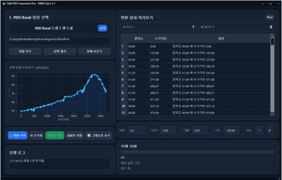

2025.12.19
2026.06.14
2026.06.14
플로우테크(주) · 기술영업팀 주임
수충격 해석·기술보고서 작성
수충격 해석·기술보고서 44개 프로젝트에 참여하고, 진행 중 타사와의 자료·조건 확인을 담당했습니다.
PORTFOLIO
기계·설비 엔지니어
기계 조립 현장에서 시작해 도면 검토, 수충격 해석과 기술문서 작성까지 경험했습니다.
wjdcoals541@gmail.com 010-9668-4878
2026.08
PROFILE
키오스크 제작, 로터리 포장기계 조립·가공, 수충격 해석과 기술보고서 작성으로 업무 범위를 넓혀 왔습니다.
현장에서는 도면과 실제 부품의 차이를 확인해 관련 부서와 수정방법을 협의했고, 기술업무에서는 자료의 정합성을 끝까지 확인하며 외부 담당자와 소통했습니다.
경험이 확장된 순서
플로우테크(주) · 기술영업팀 주임
수충격 해석·기술보고서 44개 프로젝트에 참여하고, 진행 중 타사와의 자료·조건 확인을 담당했습니다.
(주)리팩 · 조립1팀 사원
부품 가공, 용접, 유압·기본 전기배선과 도면·부품 불일치 대응을 경험했습니다.
(주)엘리비젼 · 단기 근무
조립과 마감 확인, 현장 점검 및 A/S를 경험했습니다.
CAPABILITY
로터리 포장기계 조립, 부품 가공, 용접, 유압·기본 전기배선
조립1팀 · 2년 3개월CAD 종단면도, 수리계산서, 기계실 도면과 펌프 기술자료 검토
현장 간섭·자료 정합성 확인Pipe2012 수충격 해석과 발주처 기준 기술보고서 작성
수충격 프로젝트 44건 참여타사 커뮤니케이션 전담, 반복 데이터 정리 업무 개선
수작업 4시간+ → 약 10분실무 사용 기준
행동으로 설명
도면·계산서 사이의 누락과 불일치를 확인했습니다.
엔지니어링사·시공사와 조건 및 일정을 조율했습니다.
현장 간섭과 반복 데이터 작업에 적용 가능한 방법을 찾았습니다.
CASE STUDY 01 · TECHNICAL WORK
관로·기계실·펌프 자료
수치·조건 누락 확인
펌프·밸브 조건 반영
발주처 기준 작성·제출
실제 담당 범위
펌프 H-Q, RPM, 밸브 개폐 시퀀스 등 해석조건 검토
엔지니어링사 및 시공사와 자료·조건 확인
발주처별 기준을 반영한 해석 결과와 기술보고서 작성
수주는 담당하지 않았으며, 수행 과정의 자료·조건 확인과 대외 협의를 담당했습니다.
운전조건과 성능자료 반영
시간별 작동조건 반영
도면과 계산서 정합성 확인
결과 검토 및 문서화
CASE STUDY 02 · PROCESS IMPROVEMENT
수충격 해석용 종단면도의 위치·표고 데이터를 확인해 Excel 형식으로 옮기는 작업을 반복했습니다.
도면 규모와 관계없이 종단면도 형식을 기준으로 필요한 데이터를 정리하도록 구성했습니다.
해석 업무 확인부터 적용까지
기존 수작업 결과와 추출 항목을 정리
AutoCAD 추출 데이터를 업무 형식으로 변환
기존 데이터 대조, 오류 원인 수정 후 안정화
초기 한 달 동안 기존 결과와 대조해 안정화한 뒤 실제 수충격 해석 업무에 사용하고 추가 기능을 보완했습니다.

CASE STUDY 03 · FIELD RESPONSE
로터리 포장기계 조립 중 안전문 크기가 맞지 않아 판테이블의 봉투 그립퍼와 간섭했습니다.
설계부터 다시 진행하면 약 2~3일과 신규 자재가 추가로 필요한 긴급 건이었습니다.
도어가 닫히지 않는 상태
센서 작동까지 확인한 상태
01간섭 위치와 그립퍼 돌출 치수를 현장에서 확인
02안전문 절단 후 손잡이와 센서 위치를 이동
03상사 승인·제어팀 협의 후 센서 정상 작동 확인
부서별 책임을 나누기보다 현장·설계·제어팀이 납기 안에 해결할 수 있는 방법을 선택했습니다.
CASE STUDY 04 · PROJECT EXPERIENCE
취·정수장, 상·하수도 관로, 중계·가압펌프장, 재이용·공업용수 분야
해석조건 검토, Pipe2012 해석, 기술보고서 작성과 자료·조건 확인 업무에 참여했습니다.
조립1팀에서 고객사별 장비 제작과 시운전 업무에 참여했습니다.
기계 조립
부품 가공·용접
유압·기본 전기배선
시운전·작동 확인
고객사와 협업사는 참여 이력의 예시이며, 프로젝트별 담당 범위는 실제 수행한 조립·해석·문서·확인 업무를 기준으로 정리했습니다.
BACKGROUND
최근 경력순
기술영업팀 · 주임
수충격 해석, 기술보고서, 대외 협의조립1팀 · 사원
로터리 포장기계 조립·가공·배선단기 근무
키오스크 제작, 현장 점검, A/S최종 학력
공학전문학사 · 3.44/4.5
C언어, PLC, 유압제어, 3D CAD 등실제 사용 경험만 기재
기계 조립
부품 가공·용접
유압·기본 전기배선
AutoCAD
Pipe2012
도면·기술자료 검토
Excel
Python 실무 적용
기술보고서 작성
현장에서 필요한 내용을 직접 배우고, 자료와 결과를 끝까지 확인하며 업무 범위를 넓혀 왔습니다.